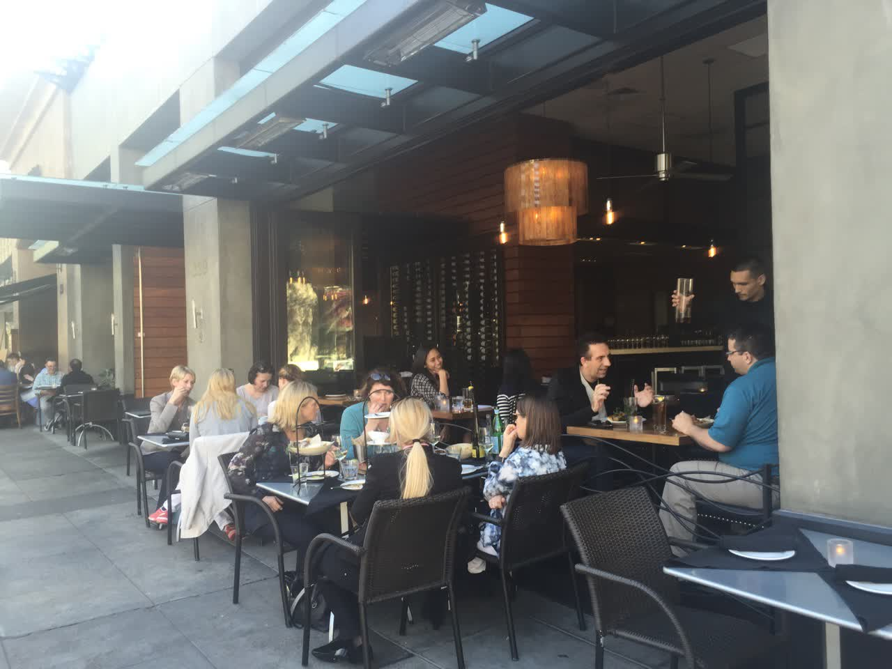
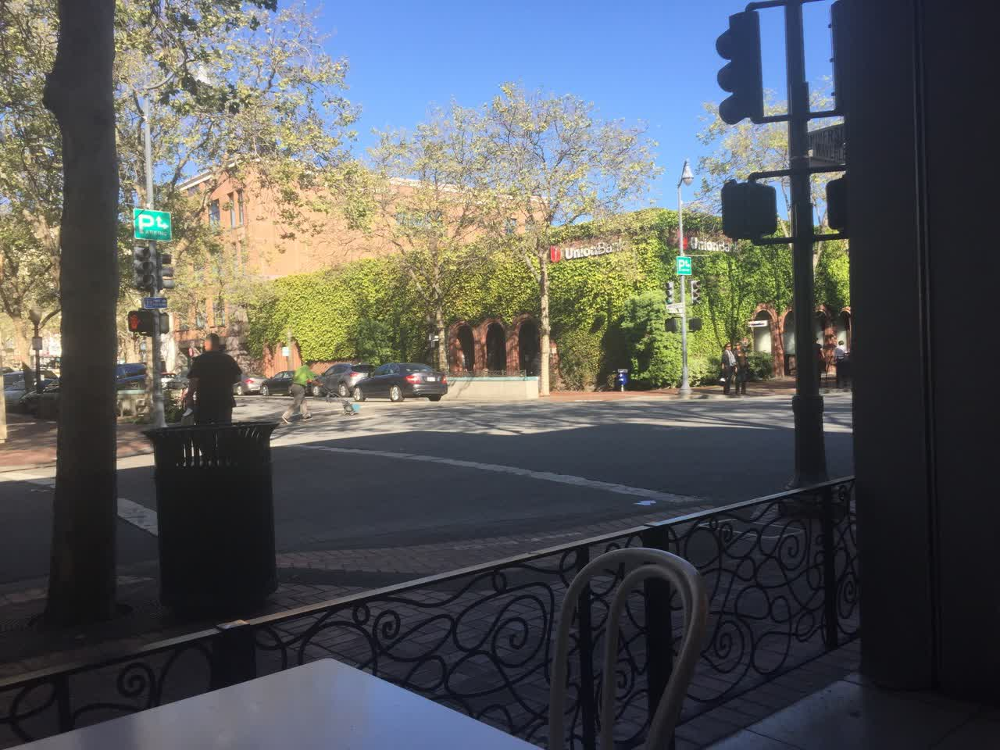
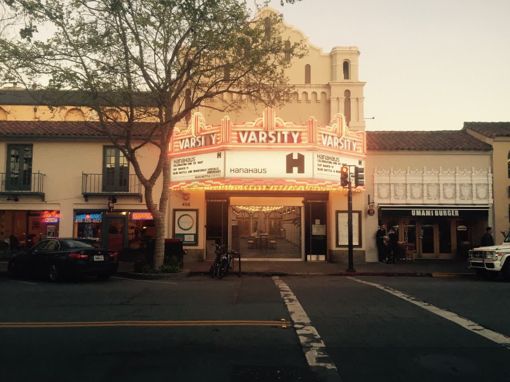

Amerikareise | Original, von KI übersetzt


3.14~4.1 在美国呆了半个月，逛了斯坦福、Google、计算机历史博物馆、Y Combinator 孵化器，看到了一件件前辈们投入了巨大好奇心和精力而成的杰作，看到了一群群精英进入 Google 大楼给这个世界带来最优质的服务，看到了研究生们在斯坦福盖茨楼钻研前沿学术，也看到了一屋子上百个不安分的年轻人在YC创业打造着他们的产品。接着来了旧金山，见到了很多流浪汉，警笛声经常响起，感受到了不安。认识了硅谷华人创业团队 Mailtime ，帮他们修修 Bug，感受了一下硅谷上班的样子。看了一场NBA，近距离地看到了库里和保罗。参观了二战英雄大黄蜂号航空母舰。还去了南北战争中著名的联合广场、德杨艺术馆、加州科技馆、很多公司的诞生地大学街、金门大桥、贝克海滩，去看了我住的地方三公里以内的Twitter、Uber、LinkedIn、Slack，还有 GitHub、Pinterest、Docker、Amazon、Dropbox在附近不过没去踩点。
3.14~4.1 Ich war zwei Wochen in den USA, besuchte Stanford, Google, das Computer History Museum und den Y Combinator Inkubator. Ich sah die Meisterwerke, die die Vorgänger mit großer Neugier und Hingabe geschaffen hatten, sah Gruppen von Eliten, die in das Google-Gebäude gingen, um der Welt den besten Service zu bieten, sah Doktoranden in der Gates Hall von Stanford, die an der Spitzenforschung arbeiteten, und sah auch einen Raum voller unruhiger junger Leute, die bei YC ihre Produkte entwickelten. Dann kam ich nach San Francisco, sah viele Obdachlose, hörte oft Sirenen und spürte eine gewisse Unruhe. Ich lernte das chinesische Startup-Team Mailtime im Silicon Valley kennen, half ihnen, ein paar Bugs zu beheben, und bekam einen Eindruck davon, wie es ist, im Silicon Valley zu arbeiten. Ich sah ein NBA-Spiel und sah Stephen Curry und Chris Paul aus nächster Nähe. Ich besuchte den Flugzeugträger USS Hornet, ein Held des Zweiten Weltkriegs. Außerdem ging ich zum berühmten Union Square aus dem Bürgerkrieg, dem de Young Museum, dem California Academy of Sciences, der University Avenue, wo viele Unternehmen gegründet wurden, der Golden Gate Bridge, dem Baker Beach. Ich sah Twitter, Uber, LinkedIn und Slack, alle innerhalb von drei Kilometern von meiner Unterkunft entfernt. GitHub, Pinterest, Docker, Amazon und Dropbox waren auch in der Nähe, aber ich habe sie nicht besucht.
Ich wurde schon lange von Freunden beeinflusst und selbst hatte ich auch eine große Sehnsucht nach dem Silicon Valley. Am Nachmittag des 2. März kam mir erneut der Gedanke, in die USA zu reisen. Ohne zu zögern, füllte ich die Formulare aus und 12 Tage später befand ich mich in den USA, wo ich zwei Wochen lang Urlaub machte. Insgesamt habe ich 20.000 RMB ausgegeben. Das hat mich sehr ermutigt. Dinge, die ich früher für schwierig hielt, konnte ich jetzt leicht bewältigen. Früher habe ich mich noch gefragt, was ein Visum überhaupt ist und dass ich mehr Geld sparen müsste, bevor ich reise, und so weiter.
Vielen Dank an Xuehui, Xuehuis Mitbewohner, das Mailtime-Team und Alex, die mir auf meinem Weg geholfen haben. Ich habe auch viele Menschen kennengelernt, jeden Uber- und Lyft-Fahrer, jeden Airbnb-Gastgeber, jeden, der mir den Weg gezeigt oder erklärt hat, wie man mit dem Bus fährt, und die Sitznachbarn im Flugzeug. Vielen Dank an alle, die ich in Cafés, auf dem Campus, auf der Straße, in Einkaufszentren, in Zügen und Bussen getroffen habe.
„Nach Amerika zu gehen, kann nicht länger aufgeschoben werden!“
Nachdem ich in drei Tagen das US-Touristenvisum erledigt hatte, erhielt ich am 9. März, eine Woche später, meinen Pass mit dem eingedruckten Visum. Also buchte ich ein Flugticket für den 14. März und machte mich auf den Weg in die USA. Da es mein erster Auslandsaufenthalt war, war ich ziemlich aufgeregt. Aber ich wusste, dass man für eine Reise in der Regel nicht viel mitnehmen muss. Ich packte nur ein oder zwei Kleidungsstücke in meinen schräg getragenen Laptop-Rucksack. Auf dem Rücken trug ich meinen Laptop. Ich tauschte bei der Bank 3000 US-Dollar um, was sich später als unnötig herausstellte, da eine Visa-Kreditkarte völlig ausreichte. Mit einem Rucksack auf dem Rücken und einer Tasche schräg über der Schulter machte ich mich auf den Weg.
Der Flug führt zunächst nach Seattle, wo dann ein Anschlussflug nach San Jose erfolgt. Am Flughafen Seattle kann man direkt mit einer kleinen U-Bahn zum Gate fahren. Am Capital International Airport nimmt man normalerweise einen Bus zum Gate. Aber hier in Seattle handelt es sich um ein vollautomatisches Transportsystem, ohne sichtbaren Fahrer. Diese einzelnen Waggons transportieren die Passagiere vollautomatisch von einem beliebigen Gate zu einem anderen. Beeindruckend, man hätte nicht gedacht, dass ein Flughafen so etwas bieten kann.


Es fühlt sich ein bisschen so an, als ob man in ein Unternehmen kommt, in dem Tests und Veröffentlichungen vollständig automatisiert sind. Es braucht herausragende Talente, um auf eine solche Lösung zu kommen, und die relevanten Institutionen sind bereit, diese Lösung einzuführen.
Ich musste sechs Stunden auf meinen Anschlussflug warten und habe mir bei Burger King etwas zu essen geholt. Die Mitarbeiter hier sind alle sehr freundlich. Bei Burger King war es eine ältere Dame, die jeden Kunden mit ein paar Scherzen begrüßte, als wäre sie eine alte Freundin, die einen aufzieht. Vielleicht liegt es am harten Wettbewerb, wie das Förderband vor mir, dass jeder hier sein Bestes geben will, und deshalb verlangen ihre Chefs, dass die Mitarbeiter freundlich zu den Kunden sind. Tatsächlich sind auch die normalen Passanten sehr freundlich, daher ist es nicht verwunderlich, dass die Servicekräfte so herzlich sind.
Einmal in San Francisco waren die U-Bahn und der Bus an einem Ort, und ich wusste nicht, wie ich fahren sollte. Ich sah zwei Typen vorbeikommen, holte mein Handy heraus und sagte ihnen, wohin ich wollte. Sie sagten, ich solle in den Untergrund gehen. Ich folgte ihnen in den Untergrund, sie gingen durch die Fahrkartenkontrolle, während ich eine Papierfahrkarte kaufte. Sie warteten eine halbe Minute auf mich, aber ich war noch nicht fertig. Ich sagte ihnen, sie sollten schon mal gehen. Dann erklärten sie mir, dass ich nach der Fahrkartenkontrolle die Treppe hinuntergehen und auf der gegenüberliegenden Seite einsteigen sollte. Ich sagte okay, und erst dann gingen sie.
在北京取机票时，我认识了一个女孩。后来在西雅图候机时又遇到了她。我们前前后后聊了三四个小时。她刚从泰国旅游回来，是一名护士。她的口头禅是“It depends”（这得看情况）。在很多事情上，比如美国的创业现状、美国与中国的一些区别，我往往比较直接，认为一就是一，而她却总能更全面地看待问题。她非常频繁地使用 iMessage。待了20天后，我也发现，iMessage 对于美国人来说就像微信对于我们一样重要。大概是因为大家都用苹果手机，iMessage 可以直接通过流量发送消息。
Stanford und die University Street
Von oben betrachtet sieht Silicon Valley wirklich schön aus, die Häuser wirken sehr ordentlich. Als ich ankam, holte Xuehui mich ab. Xuehui war mein Tutor im ersten Studienjahr an der Forstuniversität. Nach seinem Masterstudium an der Peking Universität arbeitet er jetzt bei Google. Er holte mich mit einem BMW ab, einem Mietwagen, der etwa 300 Dollar im Monat kostet. Sein Haus ist wie eine Villa: im Erdgeschoss gibt es eine Garage, im ersten Stock das Wohnzimmer und die Küche, und im zweiten Stock drei Schlafzimmer. Es fühlt sich sehr gemütlich und geräumig an. Er wohnt dort mit einem Studienkollegen zusammen.
Ich habe bei Google gefrühstückt. Meine frühere Firma wurde in den Microsoft Accelerator aufgenommen, und ich habe auch in der Kantine des Microsoft China Research Institute gegessen, was schon sehr gut war, aber Google ist noch besser. Nach dem Essen gibt es einen Drehmechanismus, wo man die Teller ablegt. Nach einer halben Drehung nehmen die Reinigungskräfte die Teller ab, um sie zu waschen. Ich war wirklich beeindruckt. Bei Google gibt es bereits Ladestationen auf dem Parkplatz, was zeigt, dass das Zeitalter der Elektroautos bevorsteht.


Dann nahm ich ein Uber zur Stanford University, die Fahrt kostete etwa 10 Dollar. Ich unterhielt mich mit dem Uber-Fahrer, der lateinamerikanischer Herkunft war. Er sagte, dass im Silicon Valley Startups überall zu finden sind (startups are everywhere). Er ist der Meinung, dass der Besitz von Schusswaffen für Bürger verboten werden sollte, da Waffen manche verrückte Menschen anstacheln könnten. Hier möchte ich noch einmal die Visa-Karte empfehlen, da man sie mit Uber verknüpfen kann.


Dann habe ich einen chinesischen Studenten angesprochen, der Biotechnologie studiert und an der Stanford University seinen Master macht. Er wollte einen Ort zum Lernen finden. Nachdem wir das Gebäude erreicht hatten, in das er wollte, bin ich in der Gegend herumgeschlendert und wollte mir das Computergebäude der Stanford University ansehen. So bin ich zu dem Gebäude gekommen, das von Bill Gates gespendet wurde:

Im Korridor gibt es viele verschiedene elektronische Geräte.


Ich finde sie sehr klug und haben ein tiefes Verständnis für Bildung. Ich habe an der Beijing Forestry University studiert. In unseren Lehrgebäuden gibt es zwar auch einige Ausstellungen über die Vorgänger der Forstwirtschaft, aber im Vergleich zu Stanford sind es viel weniger. Im Gates-Gebäude gibt es in jedem Korridor und jedem Schrank solche Ausstellungen. Was werden die jungen Leute der neuen Generation denken, wenn sie das sehen?
Danach schlenderte ich durch das gesamte Gebäude und sah verschiedene Räume, in denen Studenten Code schrieben und diskutierten. In den Fluren waren ihre Abschlussarbeiten ausgestellt.


Hier sind zwei chinesische PhDs, von denen ich gehört habe: Chen Danqi und Chen Qifeng. Beide haben bereits in der High School Goldmedaillen bei internationalen Informatikwettbewerben gewonnen.
Ich kann nicht umhin, über meine Zukunft nachzudenken. Sie erforschen Spitzentechnologien, wie man mit Bildern reale Bewegungen simulieren kann. Vermutlich stammt die Technologie von FIFA auch aus Hochschulen. Ich hingegen habe die Universität früh abgebrochen und den Weg in die Selbstständigkeit eingeschlagen. Paul Graham sagt, die beste Vorbereitung auf das Unternehmertum an der Universität sei, sich selbst in die Zukunft zu versetzen und an der Spitze des Fachgebiets zu stehen. Das Wichtigste beim Unternehmertum ist es, ein Experte auf einem Gebiet zu werden, wie die Gründer von Google, die Experten für Suchmaschinen waren. Die geschäftlichen Aspekte kann man lernen, sobald man mit der Gründung beginnt.
Danach ging ich zum Hoover Tower, um den Campus der Stanford University aus der Vogelperspektive zu betrachten.


Viele Institute gehören zu den weltweit führenden, und viele Professoren sind auf internationalem Spitzenniveau. Hier werden die zukünftigen Führungskräfte der Gesellschaft ausgebildet, die später zurückkehren und der Universität Spenden zukommen lassen, um neue Lehrgebäude zu errichten. Diese Gebäude werden dann wie Ausstellungshallen gestaltet und beeinflussen die junge Generation, selbst zu gesellschaftlichen Führungspersönlichkeiten zu werden – ein Kreislauf, der sich immer wieder fortsetzt.
Danach ging ich die University Avenue in der Nähe von Stanford entlang. Die Nummer 165 ist das berühmte “Lucky Office”, wo sowohl Google als auch PayPal gegründet wurden. In einem Dim Sum-Laden traf ich einen Typen, den CEO von Bevy, einem Unternehmen in der C-Runde. Er war aus Boston hierher gekommen, um Geschäftstermine mit Investoren zu haben.





Auf den letzten beiden Bildern sieht es sehr lebhaft aus, es scheint, als wären viele Leute Investoren oder Unternehmer. Es heißt, eine gute Methode, sie zu unterscheiden, ist, dass diejenigen, die sich zurücklehnen, Investoren sind, während diejenigen, die sich nach vorne beugen, Unternehmer sind. Warum gibt es hier so viele Investoren und Unternehmer? Liegt es daran, dass sich in der Nähe viele Investmentfirmen befinden, oder gibt es hier viele Unternehmer?
晚上住在 Airbnb 的房间里，房东是当地人，从小到大都生活在这里。他提到，1980 年苹果 IPO 时他就知道了乔布斯，并一直关注着苹果的发展。他说科技是年轻人的事情，需要非常多的精力。这种和乔布斯同在一个小镇的感觉真是神奇，从小到大耳濡目染，对科技有兴趣的人都会受到极大的鼓舞。就像我小时候，神舟6号上天时，我非常兴奋，梦想着成为一名宇航员。虽然神舟6号是在陕西发射的，而我在广东，但这依然激发了我的志向。如果距离特别近的话，听到的事迹也会更多。这些不仅仅是新闻，可能朋友会亲口告诉你很多他们亲眼所见的事迹。
Google 与计算机历史博物馆
Am nächsten Tag habe ich das Hauptgebäude von Google besucht. Es gibt viele Gebäude, aber ich habe nur einige davon besichtigt.


Anschließend besuchte ich das Computer History Museum. Von hölzernen Abakussen über mechanische Computer bis hin zu elektronischen Computern, Festplatten, Druckern, Mäusen und anderer Hardware, sowie der Geschichte von Software wie Windows 1.0 und Photoshop, bis hin zur Geschichte von Spielen und Bildtechnologie – alles war auf einen Blick zu sehen. Es ist beeindruckend, wie die Technologie in den USA eine so lange Geschichte hat und wie die Leidenschaft und das Engagement vieler Generationen über mehr als ein Jahrhundert sie so herausragend gemacht haben.


Die Arbeiter oben legen die Karten auf die Maschine, und die Maschine sortiert sie.


Xerox 硅谷研究中心，神一样的存在，发明了图形化界面、鼠标、局域网、激光打印、面向对象编程、MVC架构、Bitmap。

Nachdem wir fertig waren, gingen wir Mittagessen. Es war ziemlich lecker, eine Art Pasta.

Das war’s erstmal. In den nächsten Beiträgen werde ich über die Dichte der Star-Unternehmen in San Francisco, die Gehälter dort, meine Eindrücke nach 10 Tagen Wohnen und Leben in San Francisco sowie einige Eindrücke vom Besuch des Flugzeugträgers USS Hornet berichten.